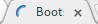

To start a client-only app easily, I suggest using tools like Brunch, Yeoman or ngTailor.
Let's use Brunch and generate a project based on the @vbrajon's brunch skeleton:
brunch new gh:vbrajon/brunch-skeleton kewl-app
cd kewl-app
brunch watch --server
And watch your app live on http://localhost:3333 !
You can publish you client-side app really easily on Github pages by inititing a repo in your public folder,
switching to gh-pages branch, commiting all files there and pushing to your repo on Github.
See the README file for more info.
Let's create some backend for our brand new Angular app. Having a REST API as a backend is a great choice, as it's allow other developers to create easily new fontends to use the data it exposes (native mobile apps, desktop apps,...) and interacts with others services. The easy syntax of Express.js will help us creating one easily.
As Brunch's basic server do, we need to send the user our static files (the Angular frontend).
After Express's install with npm install express --save, we create a new server/api.coffee file containing :
We can than start our server with ./node_modules/.bin/coffee server/api.coffee.
By installing globally CoffeeScript (npm install -g coffeescript), you can use only coffee server/api.coffee.
As Brunch provide us an easy development server, we might want to continue using our brunch watch --server to
be the only requirement to start the app.
In Brunch config file config.coffee:
And in server/server.coffee :
Now, brunch watch --server starts our Express serving our frontend, so the line api.start() is no longer
desired in server/api.coffee.
In this example, we'll create the most basic REST API of the world: one that handles a list of To Dos.
In a nutshell REST services are built around fours verbs:
GET to aquire dataPOST to add dataPUT to update dataDELETE to remove dataE.g., to acquire this webpage's content, your browser is doing a GET request to the server that respond
with the code of the webpage. Same for the pictures, the fonts...
When you're submitting a form, it's generally a POST request.
Request are addressed to an URL and can contain some extra data:
POST http://my-awesome-website.com/newsletter/subscription
{
email: 'give-me-spam@me.com'
}
Let's implement a very easy example: a ToDo list. Consider an array of ToDos like this:
We need the following routes:
GET /todo will send the listPOST /todo will add an itemDELETE /todo/:id will mark an id as doneExpress makes easy to create this routes easily:
API are testable without any frontend with tools like POSTMAN.
As interaction between a REST API is a common pattern in Angular apps, a module called
ngResource provides us a useful $resource service to map objects
described in the API.
To install ngResource module:
Brunch normally uses the main attribute from .bower.json to detect the file he needs to include in vendors
(it's the strategy used by the angular-brunch-seed.
Symlinking the files we want to include seems better to me though as we can inlude other files, control their
order (also possible with before and after attributes in brunch's config.coffee) and avoid Brunch's warning when
a .bower.json is missing (which is often the case).
Let's create a new module kewl.todo in our app in a toDo folder (modularized folder
structure):
h1 To do list
accordion
accordion-group.to-do(ng-repeat='toDo in toDoList', ng-class='{done: toDo.done}')
accordion-heading {{toDo.title}}
{{toDo.details}}
.to-do {
&.done {
.text-muted;
.panel-heading {
.text-muted;
text-decoration: line-through;
}
}
}
That handles display of tasks. We still need to create the front-end for POST/DELETE requests:
h1 To do list
accordion
accordion-group.to-do(ng-repeat='toDo in toDoList', ng-class='{done: toDo.done}')
accordion-heading {{toDo.title}}
button.mark-as-done(ng-click='markAsDone(toDo)')
i.icon.icon-check
{{toDo.details}}
accordion-group.to-do.new
accordion-heading
.row
input.title(type='text', placeholder='Add a new task...', ng-model='newToDo.title')
button.send(ng-click='addNewToDo()', ng-disabled='sendButtonDisabled')
i.icon.icon-plus
| Send
textarea(placeholder='More details?', ng-model='newToDo.details')
.to-do {
.mark-as-done {
.btn;
.btn-success;
.pull-right;
padding: @padding-xs-vertical/2 @padding-xs-horizontal;
}
&.done {
.text-muted;
.panel-heading {
.text-muted;
text-decoration: line-through;
}
}
&.new {
.title {
.form-control;
.make-xs-column(8);
.make-sm-column(10);
}
.send {
.btn;
.btn-primary;
.make-xs-column(4);
.make-sm-column(1);
.make-sm-column-offset(1);
}
textarea {
.form-control;
}
}
}
At this point, our to-do list is fully functionnal, except for a little flickering when the object toDoList is
queried. To avoid that effect, only affect $scope.toDoList when the server has answered:
$scope.refreshToDoList = ->
ToDoList.query (response) -> # function that will be called on success
$scope.toDoList = response
As user, when interacting with the server or changing route, we'll like to be informed that something is happening behind the scene. The usual UX pattern when requesting something through the web is to have a loading indicator, from the browser: 
When loading asynchronous data without refeshing the webpage (AJAX calls) like Angular does, these indicators are not triggered.
Fortunatly, Angular provides interceptors to catch requests before and after they're sent.
Interceptors are stored in the $httpProvider.interceptor. They are registered using $httpProvider like this:
To implement a loading indicator, we can add to our app.coffee:
The $rootScope.loading variable can now be used to display an indicator, like the corner indicator from
creative loading effects:
body [...] .loading-indicator(ng-show='$root.loading') [...]
.loading-indicator {
@loading-indicator-size: 300px;
position: fixed;
top: 0;
right: 0;
width: @loading-indicator-size;
height: @loading-indicator-size;
background: @navbar-default-bg;
background: rgba(red(@navbar-default-bg), green(@navbar-default-bg), blue(@navbar-default-bg), 0.7);
.transition(all 0.3s);
-webkit-transform: translateX(50%) translateY(-50%) rotate(45deg);
transform: translateX(50%) translateY(-50%) rotate(45deg);
pointer-events: none;
@circles-color-1: #fff;
@circles-color-2: @brand-primary;
&::before,
&::after {
position: absolute;
bottom: @loading-indicator-size/10;
left: @loading-indicator-size/2;
display: block;
border: 5px solid @circles-color-1;
border-radius: 50%;
content: '';
}
@big-circle-size: @loading-indicator-size*8/30;
&::before {
margin-left: -@big-circle-size/2;
width: @big-circle-size;
height: @big-circle-size;
border-right-color: @circles-color-2;
border-left-color: @circles-color-2;
-webkit-animation: rotation 3s linear infinite;
animation: rotation 3s linear infinite;
}
&::after {
@small-circle-size: @big-circle-size/2;
bottom: 50px;
margin-left: -@small-circle-size/2;
width: @small-circle-size;
height: @small-circle-size;
border-top-color: @circles-color-2;
border-bottom-color: @circles-color-2;
-webkit-animation: rotation 1s linear infinite;
animation: rotation 1s linear infinite;
}
@-webkit-keyframes rotation {
0% {
-webkit-transform: rotate(0deg);
}
50% {
-webkit-transform: rotate(180deg);
}
100% {
-webkit-transform: rotate(360deg);
}
}
@keyframes rotation {
0% {
transform: rotate(0deg);
}
50% {
transform: rotate(180deg);
}
100% {
transform: rotate(360deg);
}
}
}
As our server is local, we may not have enought time to see the loader is actually working. We can add a delay before our Express server to simulate some network latency:
You'll notice that if two request are sent, the first arrived disables the loading indicator. We can solve this issue by counting the number of request waiting:
You can visualize variables in scopes by enabling the AngularJS Batarang extension for Chrome.
In case of error, the response interceptor function is never called, letting indefinitly the indicator on. Let's handle this case to avoid bad behaviour when serving only the front-end (like on GitHub Pages).
As we're talking about errors, sometimes, the API is sending some errors that should be displayed to the user: identification failures, inexistant object, wrong route...
E.g., we should return a 'bad request' error when trying to mark as done a task that is already done:
And a 404 'not found' when the id doesn't match with any task:
Now, we just need an interceptor to pass the error to the scope and then display it:
body
[...]
.error(ng-repeat='error in $root.errors')
strong {{ error.message }}
small.pull-right Error {{ error.status }}
[...]
.error {
.alert;
.alert-danger;
width: 100%;
.make-sm-column(8);
.make-sm-column-offset(2);
.make-md-column(6);
.make-md-column-offset(3);
.make-lg-column(4);
.make-lg-column-offset(4);
z-index: 900;
position: fixed;
bottom: @padding-large-vertical;
margin: auto;
}
APIs sometimes need to autenticate to access some data. If not, a 401 'unauthorized' response is thrown.
This is a really simple authentification management in our api.coffee server:
And a simple module using $http to provide log in and log out buttons:
h1 Authentication
.row
button.login(ng-click='login()')
i.icon.icon-sign-in
| Log in
button.logout(ng-click='logout()')
i.icon.icon-sign-out
| Log out
.messages
.message(ng-repeat='message in messages')
{{message}}
.login, .logout {
.btn;
.btn-lg;
.make-xs-column(3);
}
.login {
.btn-success;
.make-xs-column-offset(1);
}
.logout {
.btn-danger;
.make-xs-column-offset(4);
}
.messages {
.row;
margin-top: @padding-base-vertical;
.message {
.alert;
.alert-info;
}
}
[...] @import "authentication/authentication";
We can finally empowered our errorsInterceptor to redirect to authentication page when we're not logged in:
We now have a synthetic boilerplate to start an Angular app that handles perfectly API communication. We can still imaginate a lot of useful features to start with:
Don't hesitate to collaborate on the GitHub repository!